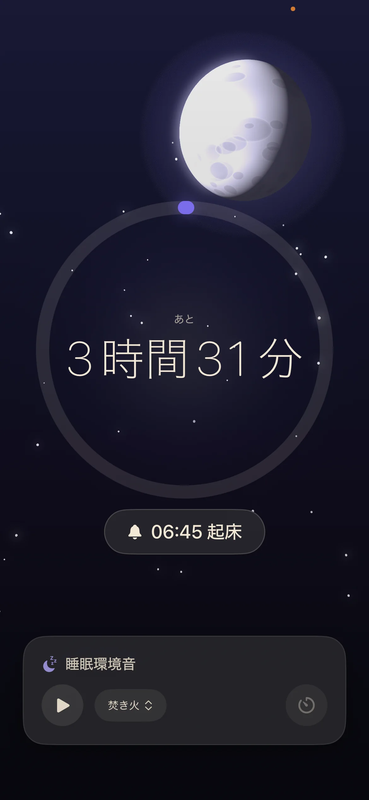
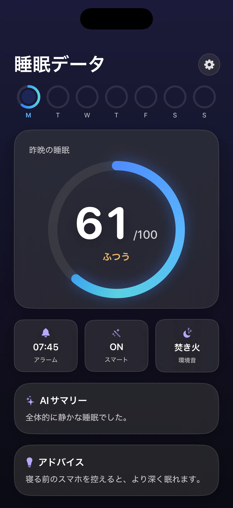
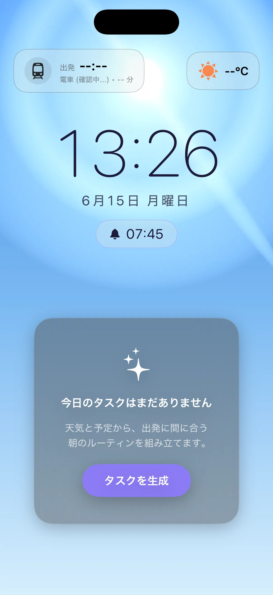
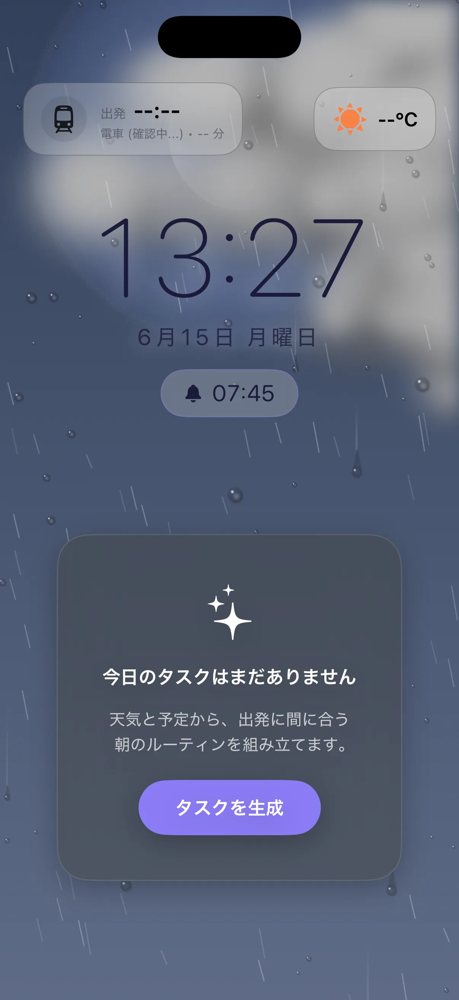

Morning Flowその日の条件を
その日の条件を
ひとつの画面に
天気、出発時刻、移動手段、朝のタスク。見る場所を増やさず、次に必要なことをまとめます。
Stellise
Sleep to Morning OS
眠っている間を知り、起きたあとの順番まで整える。Stelliseは睡眠と朝のタスクをひとつにつなぐiPhoneアプリです。



朝に必要なのは
もっと頑張ることではなく
考える回数を減らすこと
ある雨の火曜日

睡眠状態を端末内で解析し、設定時刻の近くで起きやすいタイミングを探します。
駅までの移動時間を計算し直し、出発時刻を少し早めます。
朝食より先に着替える。その日に間に合う順番へ組み直します。
完璧にこなせなくても、時間に間に合う形で朝を終えます。
実際のアプリ画面
天気、出発時刻、移動手段、朝のタスク。見る場所を増やさず、次に必要なことをまとめます。
睡眠スコアと一週間の変化を表示。生活リズムを知るための短いアドバイスを添えます。
起床までの時間とアラームを大きく表示します。環境音はPro版限定です。
料金
年額プランは月額で12か月続けるより2か月分お得です。
サブスクリプションは期間終了の24時間前までに解約しない限り自動更新されます。価格はApp Store上の表示が優先されます。
よくある質問
無料でダウンロードして基本機能を利用できます。Proは月額¥300または年額¥3,000で、初回は1週間無料で試せます。
環境音はPro版限定です。焚き火、波、雨などの音を利用できます。
録音データ自体はサーバーに保存しません。音声を解析し、検知結果のみを睡眠の振り返りに利用します。
現在はiOS 26.1以降を搭載したiPhoneに対応しています。最新の対応状況はApp Storeで確認してください。
医療目的ではありません。診断や治療が必要な場合は、医療機関へご相談ください。
つくっている人
寝不足の日も、予定が崩れた日もあります。毎朝を完璧にするのではなく、少しだけ動きやすくする。そのためにStelliseをつくっています。
明日の朝から